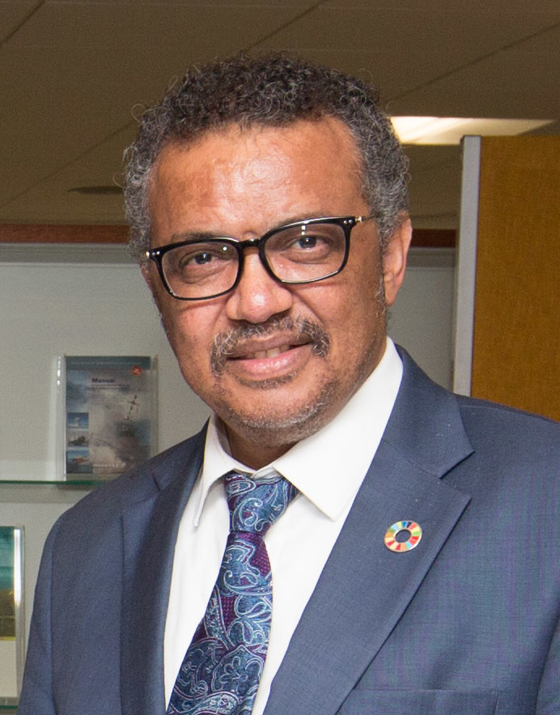
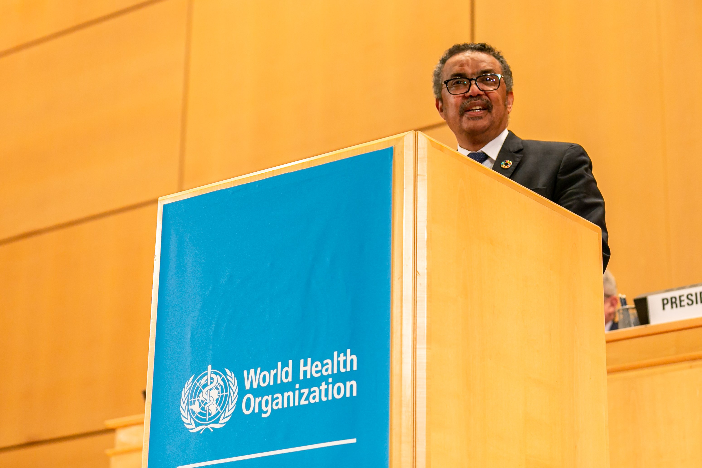
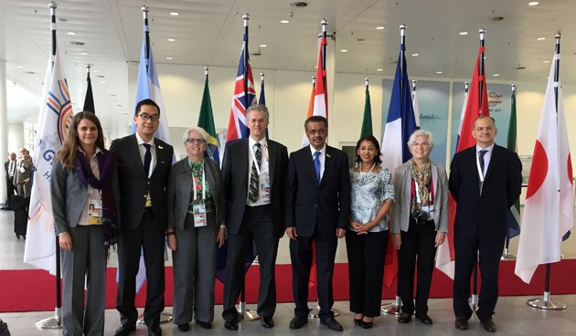

LEADER OF WHO
LEADER OF WHO
Dr Tedros: “Our vision is not health for some. It’s not health for most. It’s health for all: rich and poor, able and disabled, old and young, urban and rural, citizen and refugee. Everyone, everywhere.”

Dr Tedros Adhanom Ghebreyesus was elected WHO Director-General for a five-year term by WHO Member States at the Seventieth World Health Assembly in May 2017. In doing so, he was the first WHO Director-General elected from among multiple candidates by the World Health Assembly, and was the first person from the WHO African Region to head the world’s leading public health agency.
Born in the Eritrean city of Asmara, Dr Tedros graduated from the University of Asmara with a Bachelor of Biology, before earning a Master of Science (MSc) in Immunology of Infectious Diseases from the University of London, a Doctorate of Philosophy (PhD) in Community Health from the University of Nottingham and an Honorary Fellowship from the London School of Hygiene and Tropical Medicine.
Following his studies, Dr Tedros returned to Ethiopia to support the delivery of health services, first working as a field-level malariologist, before heading a regional health service and later serving in Ethiopia’s federal government for over a decade as Minister of Health and Minister of Foreign Affairs.

New strategy-
One year after Dr Tedros’s election, at the World Health Assembly in 2018, WHO Member States adopted the 13th General Programme of Work (GPW13), a 5-year-strategic plan with an emphasis on delivering a measurable impact in countries, to support countries in attaining the health-related targets in the Sustainable Development Goals.WHO’s work was built on a new mission statement, to “Promote health, keep the world safe and serve the vulnerable”, and the ambitious “triple billion” targets: 1 billion more people benefiting from universal health coverage; 1 billion more people better protected from health emergencies; and 1 billion more people enjoying better health and well-being.
Transformed WHO-
To enable WHO to support countries to deliver on these targets, and in close consultation with WHO’s Regional Directors, Dr Tedros led the development of a new operating model, aligning the Organization’s new structures and ways of working, and across the three levels of the Organization (Headquarters, Regional Offices and Country Offices).To support the new operating model, several new divisions were established, including the Division of Science, the Division of Data and Delivery for Impact and the Division of Emergency Preparedness.
New processes-
To make WHO more effective and efficient, 13 core processes were overhauled or initiated, in three areas:
- Processes relating to technical work like data, norms and standards and policy dialogue;
- External relations processes such as resource mobilization and communications;
- And processes relating to management and administration, including planning and budgeting, supply chain, recruitment and performance management.
New culture-
Strategies, operating models and processes will be ineffective without a talented and motivated workforce to implement them.These values drive everything WHO does, from recruiting new talent to evaluating performance, to training leaders and managers, and considering staff for promotion.Under Dr Tedros’s leadership, WHO achieved gender parity in its senior leadership for the first time, and initiated a new programme to pay interns a stipend.Training and equipping health workers worldwide has been a priority area of work. Work is ongoing to launch the first WHO Academy, which aims to offer new and more effective methods of training, in multiple languages, across many areas of heath to working people.
HEALTH TOPICS